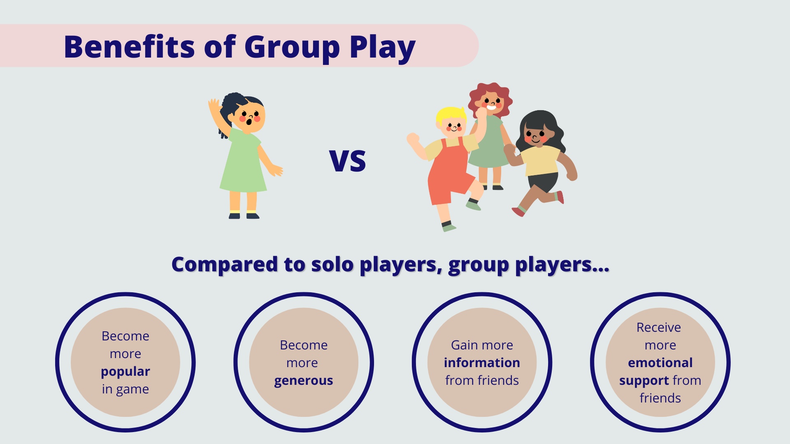

The Influence of Group Play On In-Game Generosity
In collaboration with
thatgamecompany, I investigated how to reduce in-game toxicity in a mobile MMOG,
Sky: Children of the Light, that can ultimately lead to less player churn.
 Gameplay recorded in Sky: Children of the Light by Steffie Kim
Gameplay recorded in Sky: Children of the Light by Steffie Kim
The Problem
Massively multiplayer online games (MMOGs) feature social activities and generate in-game friendships. However, social settings can be toxic sometime (e.g., cyberbullying, harassment, griefing). Previous literature suggests that teamwork yields prosocial outcomes.
Research Questions
How does group play encourage in-game prosocial activities?
How does group play benefit players?
The Goal
Find out how group play creates in-game generosity.
Investigate how players benefit from being generous.
Research Design
A survey questionnaire was distributed in Sky: Children of the Light in November 2020.
The survey data was linked to six months of in-game player behavior log data (April to October in 2020).
A total of 1,056 unique players were analyzed.
Analysis
Path analysis was conducted in R using the lavaan package.
A residualized covariance matrix was created by regressing all variables in the model on the control variables in advance to control for the variance accounted for by covariates (e.g., age, gender, playtime).
The residualized covariance was used to compute the path estimates.
Key Findings

More group play than solo play increased generosity among players increased.
Compared to solo players, group players gained more popularity, emotional support, and information from other players.
More generous players gained more information from other players and became more popular.
Being involved in groups and being generous to others increased benefits of staying in the game, which may lead to less user churn and more positive player community.
Recommendations
Designers/moderators should encourage natural group play activities that develop reciprocal generous behavior among players.
Group play can make the in-game community a place where players want to stay due to increased number of generous players and benefits (e.g., popularity) they can enjoy (can expect decreased churn rate).
Unanswered Questions
It would be useful to compare how forced group play and natural group play can yield different gameplay behavior.
Learn More
⬇ Click below to check out my first-authored journal article published in
Computers in Human Behavior based on this project